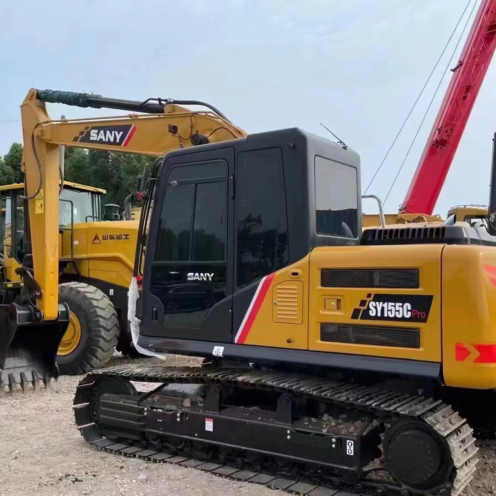

Refurbished SANY SY115 Excavator
The SANY SY115 excavator is a versatile and powerful machine that has become a popular choice for construction and earthmoving professionals. Known for its durability, impressive fuel efficiency, and solid performance, the refurbished version of this excavator offers a cost-effective alternative to buying new machinery. With proper maintenance and refurbishing, a second-hand SANY SY115 can deliver exceptional performance on job sites without the high upfront costs associated with new equipment.
Honestly, it's almost impossible to buy a brand new excavator from China. They either don't exist or are made in China. If a Chinese seller tells you their Caterpillar/Komatsu/Volvo/Kobelco/Hitachi is brand new, they're lying. Therefore, a refurbished excavator is your best bet.

Overview of the SANY SY115 Excavator
SANY is a well-established manufacturer of construction equipment, and the SY115 is part of their SY Series, which includes compact yet powerful hydraulic excavators designed for a variety of applications. The SY115 is a mid-sized excavator that strikes a balance between power and agility, making it ideal for tasks such as digging, grading, trenching, and material handling.
The refurbished version of the SY115 offers the same reliable performance as new models, but at a more affordable price point. It has been restored to factory standards, with critical components like the engine, hydraulics, and undercarriage repaired or replaced as needed. Refurbished SANY excavators are typically tested and certified to ensure they meet safety and operational standards, ensuring buyers get a machine that can handle demanding tasks on construction sites, roads, and infrastructure projects.
Here are the detailed specifications for a refurbished SANY SY115C excavator:
Operating Weight and Dimensions
- Operating Weight: 11,000–11,500 kg
- Overall Length: ~8.3 meters
- Overall Width: ~2.59 meters
- Overall Height: ~2.9–3.0 meters
- Ground Clearance: ~440 mm
- Tail Swing Radius: ~2.4 meters
- Track Width: 500–600 mm standard
Engine and Powertrain
- Engine Model: Isuzu 4JJ1X turbo diesel
- Rated Power Output: ~112 hp (84 kW)
- Maximum Torque: ~480 Nm @ 1,500 rpm
- Fuel Tank Capacity: ~300 liters
- Gradeability: Up to 35°
- Travel Speed: 3.5–5.5 km/h
- Swing Speed: ~11 rpm
Hydraulic System
- Main Pump Type: Variable displacement axial piston pump
- Flow Rate: ~2 × 160 L/min
- System Pressure: Up to 31.5 MPa
- Hydraulic Oil Capacity: ~220 liters
- Boom Cylinder Bore: ~120 mm
- Arm Cylinder Bore: ~105 mm
- Bucket Cylinder Bore: ~95 mm
Performance Metrics
- Bucket Capacity: 0.45–0.65 m³
- Max Digging Depth: ~5.3 meters
- Max Reach (Horizontal): ~8.6 meters
- Max Dump Height: ~5.7 meters
- Bucket Digging Force: ~103 kN
- Arm Digging Force: ~67 kN
Cab and Operator Features
- Cab Type: ROPS/FOPS certified
- Display: LCD monitor with diagnostics and fuel tracking
- Controls: Ergonomic joysticks with customizable sensitivity
- Comfort: Air-conditioned cab, adjustable suspension seat
- Visibility: Panoramic glass with optional rear-view camera
Smart Features and Efficiency
- Eco Mode: Adaptive engine output for fuel savings
- Auto Idle: Reduces RPM during inactivity
- Centralized Lubrication: Optional for reduced maintenance
- Telematics Ready: Some refurbished units support remote diagnostics
Attachments Compatibility
- Standard Bucket: 0.45–0.65 m³
- Optional Tools: Hydraulic breaker, grapple, compactor, ripper
- Quick Coupler: Hydraulic or manual options available
Refurbishment Scope
Refurbished SY115 units typically include:
- Engine overhaul (injectors, turbo, seals)
- Hydraulic pump recalibration or replacement
- Electrical system rewiring and sensor testing
- Cab restoration (seat, controls, HVAC)
- Structural repairs (boom welding, bushing replacement, repainting)
Key Features of the SANY SY115 Excavator
The SANY SY115 excavator, whether new or refurbished, is equipped with a range of features that make it an efficient and reliable machine for various job sites.
Engine and Performance
-
Engine Type: The SY115 is powered by a Yanmar 4TNV94L engine, which offers both fuel efficiency and power for demanding tasks. The engine typically produces around 85 horsepower (63.3 kW), providing the strength needed for a range of excavation and construction tasks.
-
Hydraulic System: The hydraulic system in the SY115 ensures smooth and efficient operation, with a closed-center load-sensing hydraulic system that improves fuel economy and operational speed. It is designed for precision and offers improved productivity.
-
Fuel Efficiency: One of the key benefits of the SY115, especially when refurbished, is its excellent fuel efficiency. The machine's engine and hydraulic system work in tandem to reduce fuel consumption, leading to lower operating costs over time.
Digging and Lifting Capabilities
-
Digging Depth: The SY115 is capable of reaching a maximum digging depth of 4.5 meters (14.8 feet), making it suitable for standard trenching and excavation tasks. This is a key feature for construction companies that need a versatile machine for various job site requirements.
-
Lifting Capacity: With a lifting capacity of approximately 3,100 kg (6,834 lbs) at full reach, the SY115 can handle a variety of tasks such as material loading, lifting heavy pipes, or lifting pallets with ease. This makes the SY115 a capable option for general construction and earthmoving operations.
-
Bucket Capacity: The bucket capacity ranges from 0.4 to 0.6 cubic meters depending on the configuration, which is suitable for a wide variety of loading and digging tasks.
Operator Comfort and Safety Features
-
Cabin Design: The operator's cabin in the SY115 is designed for comfort and ease of operation. It features a spacious, air-conditioned cabin with clear visibility and intuitive controls. The seat is adjustable, and the controls are designed to reduce operator fatigue during long working hours.
-
Advanced Control System: The SY115 is equipped with advanced control systems that allow for smooth, precise movements. This includes adjustable joystick controls, a touchscreen display, and a range of monitoring systems that provide real-time data on the machine's performance.
-
Safety Features: The SY115 includes features such as a ROPS (Roll-Over Protection System) and FOPS (Falling Object Protection System) to protect the operator during operation. The design of the undercarriage and cab offers enhanced stability and safety when working on uneven or sloped surfaces.
Benefits of a Refurbished SANY SY115 Excavator
A refurbished SANY SY115 can provide significant cost savings compared to buying a new machine, but it still offers many of the same benefits. Here are some key reasons why a refurbished SANY SY115 might be the right choice for your business:
Lower Initial Cost
Refurbished machines cost significantly less than new ones, allowing contractors and construction companies to get a high-quality machine for a fraction of the price. This is especially important for businesses that need to manage equipment costs while still maintaining operational efficiency.
Certified Performance
Refurbished SANY SY115 excavators are typically restored to their original factory standards. Repaired or replaced components such as the engine, hydraulic systems, and undercarriage are rigorously tested to ensure they meet the manufacturer's specifications. This means that refurbished machines are reliable and capable of performing just as well as new models.
Reduced Depreciation
New machinery depreciates quickly, with a significant reduction in value during the first few years of ownership. By purchasing a refurbished machine, you avoid the steepest depreciation curve, as the machine has already undergone its initial value reduction. This makes the refurbished SY115 a smarter financial choice for businesses that plan to resell or trade-in the equipment later.
Environmental Benefits
Refurbishing older equipment is also an environmentally friendly option. By extending the lifespan of a machine, companies contribute to reducing waste and demand for new resources, making it a sustainable choice. Additionally, refurbished equipment often comes with upgraded parts, such as more fuel-efficient engines or improved hydraulic systems, which can further reduce the environmental impact during operation.
Maintenance and Care for a Refurbished SY115
Maintaining a refurbished SANY SY115 excavator is key to ensuring it continues to perform at its best. Here are some tips for keeping your machine in top shape:
-
Regular Inspections: Perform regular checks on the hydraulic system, engine, and undercarriage to ensure everything is functioning as expected. Monitoring oil levels and fluid conditions regularly will prevent unnecessary wear and tear.
-
Scheduled Maintenance: Follow the recommended maintenance schedule for the SY115, which typically includes oil changes, air filter replacements, and inspection of key components like the swing bearing, bucket, and boom.
-
Tire and Undercarriage Maintenance: Check the undercarriage regularly for signs of wear, as this is a critical component for stability and digging performance. Keep the tires properly inflated and check for any damage that may affect the machine’s mobility.
-
Monitor the Hydraulic System: The hydraulic system is one of the most critical parts of an excavator. Ensuring the fluid levels are correct and there are no leaks is essential for long-term performance.
Conclusion
The refurbished SANY SY115 excavator is an excellent choice for contractors and businesses looking for a cost-effective solution without compromising on performance. With its solid power, reliable hydraulic system, and ability to handle various excavation tasks, the SY115 is a versatile machine suited for a wide range of construction and earthmoving applications. Whether you’re upgrading your fleet or replacing an old machine, a refurbished SY115 offers significant savings and reliable performance, making it an excellent investment for your business.
Our Commitment
- 2 years / 4000 hours warranty.
- EPA certified.
- No sweatshop labor.
Contacts

- [email protected]
- Youtube Instagram Facebook
- Navigation: G206 (Sishu Bridge) in Changfeng County, Hefei City, Anhui Province, 200 meters north to the east